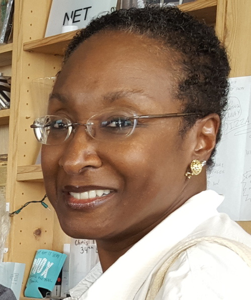

Greetings from English Now!

Welcome to ENcompass, which provides information and ideas to English Now! friends and family around the world. Whether you were a student with us years ago or you are a friend in the Washington, D.C., international community, it brings us joy to reach out to you today.
We are not a large school, but we take a special approach to language education. ENcompass is our effort to reach out a bit more broadly than ever before. We hope you enjoy these articles. If you are an alumni now back in your home country, you can also "see" some of the school in photos, or you may enjoy a short video of our school (see here) or of our classes (see here).
By the way, we call this "ENcompass" because one of the meanings of the word "encompass" is "to include a wide range of ideas." English Now! is a special place because we welcome people from many nations, cultures, and languages. We all grow through the experience. We thank you for your part in the English Now! story and are glad to be with you!
In addition to the articles below, please see here for great ideas and information from past issues of ENcompass.
Warmest Regards -
Paul Boesen
Great things to do for visitors in D.C. this summer

ENcompass art, athletics, and adventure!
Maybe you have heard that Washington can be very HOT in the summer, but has anyone ever told you how many COOL things there to do in and around the nation’s capital? We’ve put together a few hidden gems that we think you and your friends and family will enjoy.
Extended Hours at Smithsonian Museums:
The great thing about Washington D.C. museums is that they are free and fantastic! So, you don’t have to spend your whole day at the museum. You can go for an hour or two and then come back another day! During the Spring and Summer, enjoy extended hours at the National Museum of American History, National Air and Space Museum, National Museum of Natural History and The National Zoo! http://www.si.edu/
Public Pools:
There are many ways to stay cool in D.C. area and swimming is very popular with residents and visitors of all ages. There are seven outdoor pools that are open to the public in Montgomery County, Maryland, just outside Washington, D.C.. Find out where the nearest public pool is located by visiting the Montgomery County Aquatics web site.
Indoor Ice-Skating:
Ice-skating is not just for wintertime! Several area ice skating rinks are open year-round (winter, spring, summer and fall). Visit their web sites to find out about public skating hours and skate rental prices.
10610 Westlake Drive, Rockville, Maryland. (301) 365-2246
11751 Orebaugh, Wheaton, Maryland. (301) 649-3640.
50 Southlawn Court, Rockville, Maryland. (301) 294-8101
Biking:
Did you know that you could bike from Bethesda, Maryland to historic Georgetown in Washington, D.C. in about 30 minutes? Just follow the capital crescent trail from Bethesda and ride until the trail ends in Georgetown. Once you’re there, enjoy some lunch by the Potomac River.
For a map of the Capital Crescent Trail, click here.
For more on bike rentals, click here.
Boating:
Rent a kayak and see the Washington Monument from the water!
Key Bridge Boat House - Located along the Capital Crescent Trail at the eight mile marker at 3500 Water St. NW, Washington, DC, (202) 337-9642
Thompson Boat House - Located at the end of the Capital Crescent Trail in Georgetown at 2900 Virginia Ave NW, Washington, DC, (202) 333-9543.
Free Summer Concerts:
Throughout the summer, there are many opportunities to listen to music and many of them are free of charge. Check out this website to get some ideas.
Get ready for a great summer! With Best Wishes from English Now!
Spotlight on a Teacher: Jane Turner
What part of the United States are you from? What was it like growing up there?
I'm from what they call the midwest, even though Ohio is closer to the east. I was born and raised in Lima, Ohio on the western side of the state, very close to Indiana. I'm the oldest of three children. We had a happy, loving childhood growing up there in the 1950s. Our protected world was that of our African-American neighborhood block where we played "Wagon Train" from the old TV series, rode bikes, climbed trees, roller skated, jumped rope, caught lightning bugs played hide ‘n seek and played lots of baseball. My father was a self-taught gardener who had a big garden. Among the many fruit trees he planted was a wonderful apricot tree in the center of our back yard. Its abundant fragrant blossoms in the spring meant lots of sweet apricots for the picking in the summer…something that doesn’t seem to exist in today’s supermarkets! We didn't live that far from a dairy. We kids drank lots of whole milk. It was delivered in glass bottles to our doorstep by horse-drawn cart and we all loved to pet the horse. I always said it was the milk that helped me be the fastest runner on the block. Simultaneously, in spite of being called the “n” word in kindergarten for the first time ever, I enjoyed learning in school and welcomed the challenges of high achievement in that multi-racial environment. When I wasn’t outdoors, I loved reading, especially in my elementary years, and kept a list of more than one hundred books that I read in one summer.
Did you run competitively growing up?
I ran the 75 yard dash in junior high school. There was a girl that always used to outrun me by a head primarily because she was really tall. Both of our names were Jane. I finally did beat her once.in a regional AAU Jr. Olympics competition".
What else do you remember about that time?
My parents were diligent hard-working people who did their best to expose my brother, sister and me to the finer things of middle class life - from piano, horseback riding and skiing lessons, to annual family vacation travel around the country. Our family was equally active in the church and became aware of the Civil Rights movement that was expanding throughout the country in the 1950’s & 60’s. In the midst of trying to imitate the hugely popular singing groups of the Motown Sounds, I also remember picketing with our church group and some college students at a ku klux klan rally, complete with cross burning, not in the deep south, but in southern Ohio!
When my family moved to Shaker Heights, Ohio, a suburb of Cleveland, in the summer of 1968, our world and activism expanded accordingly. I became a little more politically engaged in such activities as “Young Folks for (Carl) Stokes” to help elect that city’s first African American mayor. I also joined a few student-led marches on our high school principal’s office to demand fair treatment for students of color, in one situation, and, in another, that girls be allowed to wear pants to school for the first time ever. (I never owned a pair of jeans until I went away to college.) My interest in journalism developed in the last semester of my senior year in high school, when I interned at the Cleveland Call & Post African American Newspaper. That led to a summer job before starting college.
Where did you go to college and what did you study there?
I only applied to three journalism schools at Boston University, New York University and Northwestern University in Chicago. I was accepted at all three, but went to NU where I got the biggest grant in its school of journalism. I did well my freshman year. Then I transferred to Howard University in Washington, DC where they had recently opened up the school of communications, led by the new dean, Tony Brown, who was also an admired director/host of Black Journal on PBS at that time. I made application that summer for expected enrollment the following January! I ended up being accepted for the September term! Luckily, Howard took all of my credits. At this time my career interest shifted from print journalism to broadcast journalism, specifically radio news. In fact, my radio instructor encouraged us to get our radio licenses so that we could operate our own control boards. I started at WASH Radio in the billing department back in the early 70's while still a student at Howard. When a news assistant position opened up, I got the job and began building my resume there and at WMAL Radio. I gained on-air experience as a vacation & weekend relief news anchor/reporter during the summers and holidays at the local soul music stations. I had to join the union while still in college back in the early 1970’s.
Can you tell us about your early career in broadcast journalism?
By the time I graduated Howard in 1975, I had a decent resume to go along with the degree, which enabled me to get my first full time radio news position at WHUR-FM Radio. I worked from 3pm till 11:30-pm, as the first female news anchor of their big news broadcast of the day, called “The Drum”. About three months into the job there was a strike for better wages and working conditions. Broadcasters & technicians from other stations around the city supported us in this ultimately successful effort.
ABC Network bought the next station I worked for: WMAL AM &FM. There I developed my street reporting skills, working primarily general assignments and regional beats, as well as my news anchor skills. Sometimes our reports would be broadcast nationally such as for big demonstrations and breaking news events, including the return of the hostages from Iran at the beginning of the Reagan administration and the Air Florida airline crash at the 14th Street Bridge. Eventually I became news assignment manager for the news department, second only to the news director. I feel fortunate to have had my radio news broadcasting career right here in Washington DC.
In 1983, I got married to a widower with five young children. I let go my career to take up full time homemaking. My husband was with ABC on the tech side. He had previously taught TV production at Howard and I had at one time taken his class. I’d never dreamed that I was looking at my future husband.
How did you decide that you wanted to teach English?
Fast forward….I took off some 20 years to deal with my ready -made family while my husband worked the equivalent of two full time jobs. I reentered the workforce as a substitute religion teacher at the catholic school of the parish where my husband was assigned as a permanent deacon. After doing additional substitute work and working at a few more catholic schools that either closed or eliminated my religion position, I decided to change focus. My sister suggested that I look at teaching English. I looked online and came across the LADO International School. After some research, I enrolled in their semi-intensive program to become an English language teacher in the fall of 2010. It was a very rigorous curriculum, but the experience dispelled my fears that I was too old to get back into the workforce. I felt a renewed vigor, enthusiasm and excitement about where this would take me when I received my certificate in early 2011. The very day I was supposed to start as a volunteer at the Montgomery County Literacy Council, I was offered a teaching job at LADO in the Silver Spring branch. One day, about a year later, I got a tip to check out English Now! Am I ever glad I did!
What's your favorite part of being a teacher?
Being able to practice what some might call the ministry of presence, the being there for my students in whatever may be happening in their lives on any given day; and interactions with my students, because they teach me as much as I teach them. In fact, I feel like I get a bonus from them. While I haven't been able to travel worldwide as much as I would have liked, I get to do so, vicariously, now through the eyes and perspectives of my students.
How do you like to spend your time when you're not at English Now!?
I’m researching the family trees on both sides of my parents, aided by Ancestry.Com and trying to complete a quilt with dozens of fabric pieces that my grandmother started in the 1930’s during the Great Depression. (I’m almost finished!) Walking, fair-weather gardening, and flavorful, nutritious cooking are relaxing for me. My husband and I are very active in our parish church as well. We enjoy making the most of “stay-cations “and long weekends as well as taking in local/regional events & sightseeing whenever possible.
Do you have a favorite travel destination?
Going to Atlanta because my husband and I are the only ones in our family in the DC area. We can see a lot of family in one trip there; and of course, Cleveland, Ohio, continues to be home for me as long as my beloved parents are still there.
What else would you like your students to know about you?
I like to dance and take Zumba once a week. I’m especially fond of jazz and gospel music, but enjoy virtually all expressions of art.
Spotlight on a Student: Alessia Garcia
Alessia has studied at English Now! for the past two years during her high school summer vacation. She has studied in the Intensive English Program and prepared for the TOEFL exam. In March, 2016 she led two workshops to teach other English Now! students about American Sign Language. She recently spoke with us about her interests and her goals for the future.
Where did you go to high school?
I went to a navy school in Peru called Liceo Naval Almirante Guise. Only children of people in the navy can attend my school.
What were your favorite activities and subjects in high school?
I am a swimmer in Peru, and I love athletics. I was an actress and a model for a few years, and I love art. I was in a drama club, and I love Spanish language.
What do you plan to study at the university?
I want to study public relations at the Peruvian University of Applied Sciences. Then, I want to come back to the United States to get a masters at Georgetown University. So, it’s one of my options to come here again.
When did you start studying English?
I have had nine hours of English per week since Kindergarten – the alphabet, numbers, basic questions, spelling your name. It’s obligatory to take that class. In high school, I was placed in advanced level English after taking an exam.
How is studying English different here than in Peru?
I prefer to come here because I know that when I touch American ground, I need to switch to English. I think that it’s better for me to study here. When I was in school it was two hours a day and then Spanish classes. When I was in school I wasn’t thinking that English was necessary for my life, but when I came here I really saw that I needed English.
How did you get interested in American Sign Language?
I always wanted to do sign language. I used to say “it would be good if I could". But when I came here I said, “I am going to do it", and I bought the books to learn American Sign Language.
And now you're teaching American Sign Language classes at English Now!
Yes, thank you for the opportunity. When I teach, I know that I need to know everything. I just want to thank you for the opportunity to teach other people about something that I think is important. I think it’s important to know that there are people that can’t do what we do, but God gave them another gift. I think that sign language is like magic because people can communicate with their hands. So, thank you for the opportunity, and for teaching me what I know, because I have learned more here than in Peru!
Welcome to Our International Cookbook!

We enjoy sharing a meal together once a month, at our potluck lunches. Our monthly potluck lunch, on the second Thursday of each Intensive English Program term, is consistently one of our students' most enjoyable experiences. Sharing a meal is a special experience, for all peoples and in all cultures.
As a small part of this experience, we also enjoy sharing great recipes with each other and - onour online International Cookbook - with you. Please try one of these dishes, and we inviteadditional suggestions about great food from around the world: submit your ownrecipe! Please contact us for information about how to submit a recipe.
Understanding U.S. Universities and the TOEFL Test

Some of our students want to study in the United States, at a college or university, and we are frequently asked about admissions requirements and college application processes. In addition, many students ask us about the TOEFL (or other) English language examinations required by American universities.
We have prepared a resource for students that will help you think about pursuing higher education in the United States. Please feel free to download our U.S. Higher Education FAQ document, which addresses many of the common questions that people ask. For example, what is the difference between a college and a university? What are the TOEFL or other test requirements for undergraduate or graduate programs, in the U.S.?
We are honored to have helped many students prepare for college or university in the United States and wish you well, if you are on this path!
We hope that you have enjoyed your time with ENcompass. Please let us know if you have any suggestions for future ideas and information we might provide to our family and friends around the world, online!